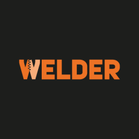

MITEX 2026 · Россия · Стенд 8С1801
ПРОМТОРГ, ООО
Карточка проверена 10 ноября 2026, 09:25 · Источник ↗ · Снимок оригинальной карточки ↗
О компании
WELDER — это современное производственное предприятие, специализирующееся на изготовлении и продаже высококачественных изделий из различных видов пластика и металла. Компания была основана в 2019 году и с тех пор успешно развивается, расширяя ассортимент продукции и географию присутствия на рынке. Сегодня, производимую нами продукцию можно приобрести практически в каждом городе России, Белоруссии, Казахстана и Армении. Наша главная цель — обеспечить наших клиентов качественными и доступными изделиями, которые будут служить им долгое время.
Контакты
Все контактные сведения из карточки
Контакты Юридический адрес Телефон: +7 (812) 309-35-38 E-mail: info@ptpz.ru Адрес: 188307, Россия, Ленинградская область, Гатчина, тер. Корпиково (Промышленная Зона), зд. 17 стр. 2 Веб-сайт: http://ptpz.ru E-mail: info@ptpz.ru Телефон: +8 (812) 309-3538
Все рубрики участника
Mitex - Рубрикатор
- 3. Сварочное оборудование, расходные материалы, СИЗ
- 5. Слесарный, монтажный, столярный, ручной инструмент
- 6. Инструменты и оборудование для обработки и резки металла, проволоки, труб, камня, стекла, керамики, пластмасс, дерева
Зал
- Зал № 8
Участник выставки
- MITEX
Видео, каталоги и документы
В доступной карточке нет видео или документов. Смотрите сайт участника.